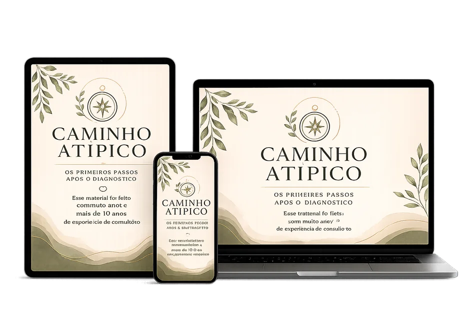

O Caminho Atípico reúne, num material só, o primeiro passo que toda mãe deveria receber na primeira consulta. Da hora do diagnóstico até como pensar o futuro. Para autismo, TDAH, dislexia e TOD.
Quero o Caminho Atípico Veja como funciona e tudo o que está incluído
“Minha filha superou seus medos e venceu desafios. Hoje é uma menina forte e determinada.”
Ana Tereza, mãe · sobre o acompanhamento da Nathiely
Eu vou descrever três cenas. Você me diz, em silêncio, quantas viveu.
A última crise em público. No mercado, no aniversário, num restaurante. Você sentiu o calor subir no rosto antes de virar. E quando virou, ele já estava no chão. Ou gritando. Ou batendo a cabeça. E você fez o que jurou que nunca faria: apertou o braço dele mais forte do que precisava. Pra fazer parar. E à noite, passou a mão naquele braço pequeno tentando apagar uma marca que nem existia. E chorou em silêncio.
A mesinha. Você comprou os materiais lindos, sentou com ele, chamou com a voz doce que ensaiou. Ele veio. Em quinze segundos estava de pé. Você tentou com mais paciência. Ele virou de costas. E aí, calada, veio aquele pensamento que você nunca disse em voz alta nem pra Deus: “eu não sei ensinar meu próprio filho.”
A cozinha, depois das dez. Ele finalmente dormiu. Você encostou na parede fria e ficou olhando o nada. E pensou, sem nem se assustar mais: “eu não tô ajudando esse menino. Talvez ele estivesse melhor com uma mãe que soubesse.”
o problema real
Não é a crise. É os segundos em que ela começa e você tem que decidir alguma coisa, e todo o conhecimento do mundo evapora. Você grita, ameaça, implora, puxa o braço. Faz o oposto do que deveria, porque ninguém te ensinou o que deveria. E o pior não é a crise. É a noite depois, revisando cada segundo, descobrindo num post às duas da manhã que o que você fez piorou.
Você sai do consultório com uma lista que parece outro idioma. Abre o YouTube, vê outras mães conseguindo, compra material, senta. E ele não fica. E você se sente, pela primeira vez na vida adulta, literalmente burra. Você, que sempre aprendeu o que precisou, não sabe ensinar a pessoa que mais ama.
Os meses passam, as terapias passam, e você não tem certeza se algum esforço fez diferença. E numa noite mais cansada, vem aquele pensamento que te assusta tanto que você nem ousa repetir.
O problema não é você. É que você está tentando construir uma vida pra esse filho com as mãos vazias. Ninguém te entregou as ferramentas. E sem ferramenta, nem amor constrói.
Você já viu os perfis prometendo “reverter o autismo em 90 dias”. Os cursos de R$5.000, R$8.000, R$12.000 vendendo “método exclusivo” que nenhuma sociedade científica reconhece. Os “protocolos secretos” que custam o salário do mês de uma família comum.
Aquele anúncio que apareceu pra você ontem? Foi calibrado. Você foi mapeada. Alvejada. Capturada. Eles transformaram a dor da sua família em modelo de negócio.
Eu construí o Caminho Atípico, em parte, porque estou cansada disso.
Você não foi ingênua. Você foi alvo.
o que tem dentro
Um guia que percorre autismo, TDAH, dislexia e TOD, do diagnóstico ao futuro.
Na crise, o cérebro racional do seu filho está desligado. Por isso falar, explicar ou repreender não funciona. O que funciona é o oposto do que o instinto pede: abaixe a voz, reduza tudo a três palavras (“estou aqui, vai passar”), tire estímulos e deixe a tempestade passar. Sua calma é a única coisa que o sistema nervoso dele consegue copiar.
Isso foi um parágrafo. O guia inteiro tem 7 capítulos assim.
o depois
Imagina a próxima crise. A de sempre. Mas dessa vez você não congela: sabe o que fazer nos primeiros segundos, faz, e a tempestade dura metade. E nessa noite você deita tranquila, porque pela primeira vez fez o certo.
Imagina sentar pra ensinar algo pra ele e, dessa vez, dar certo. Não porque ele mudou da noite pro dia. Porque você deixou de estar de mãos vazias.
É isso que tem do outro lado dessas páginas. Não uma cura. Algo mais honesto e mais útil: uma mãe que finalmente sabe o que fazer.
a oferta completa
O guia completo, nas 7 etapas que seguem a jornada que você está vivendo. Do diagnóstico ao futuro.
Atividades práticas pra aplicar em casa, do jeito certo, desde hoje.
Pronto pra imprimir. Antecipa o dia, organiza a sequência, reduz crises de transição.
o investimento
Uma única consulta com profissional especializado custa, em média, entre R$ 250 e R$ 500. Hoje você não investe R$ 311. Nem R$ 197. Nem R$ 97. Nem R$ 67.
ou 9x de R$ 6,17 no cartão · acesso imediato
Preço de lançamento. Sobe quando fechar as primeiras 100 famílias.
Menos de R$ 7 por mês.
Menos que um lanche no fim de semana.
Menos que uma consulta avulsa.
Garantia ridícula de 7 dias.
Você não precisa nem terminar de ler. Lê uma página, lê duas. Se a primeira não te tocar, me escreve. Devolvo seu dinheiro até a última moeda. Sem questionário, sem cara feia. O risco é todo meu.
quem está por trás
o que as mães falam
O acompanhamento da minha filha com a Nathiely foi de grande valia. Minha filha conseguiu superar seus medos e vencer desafios. Tudo foi abordado de maneira suave e responsável, o que foi fundamental pra ela crescer forte, determinada e resolvida. Hoje é uma menina inteligente, que conhece o respeito, a honestidade e o amor próprio. Agradeço a essa profissional tão dedicada.
Não é R$ 47. R$ 47 você gasta sem pensar. É o medo de que mais um material não funcione contigo. Aquela voz que diz “comigo é diferente, comigo nada pega.”
Se essa página fosse R$ 1.000, eu entenderia a dúvida. Mas é R$ 47, e você tem 7 dias pra ler e pedir o dinheiro de volta. Então a pergunta não é se vale o risco. O risco não existe.
A próxima crise vai acontecer. A próxima noite acordada vai acontecer. Você vai chegar nelas de mãos vazias? Ou com 10 anos de prática clínica dentro da sua casa?
Com carinho de quem entende,
Nathiely Carvalho